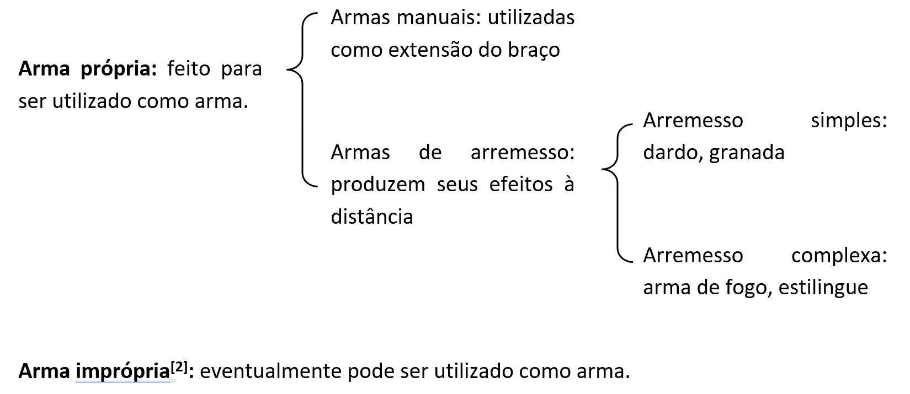
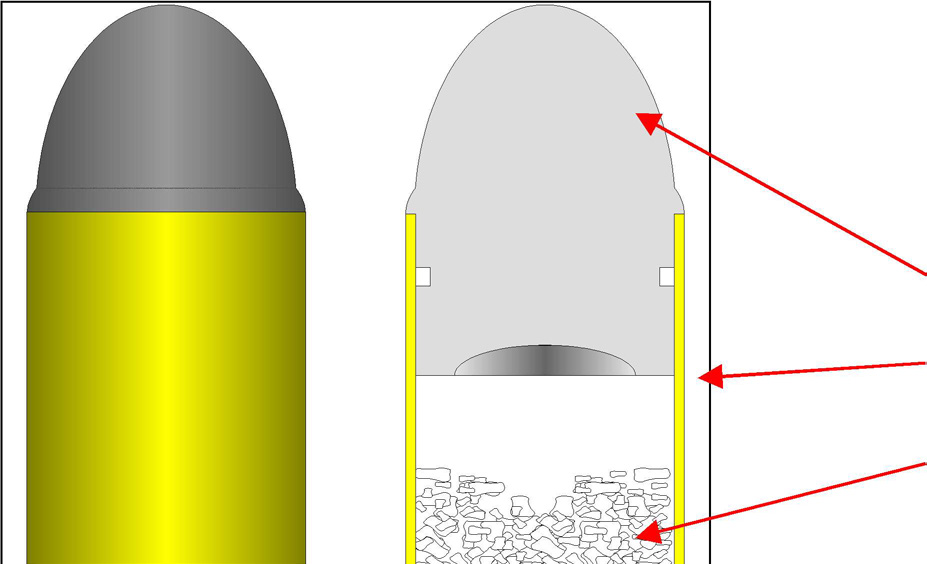
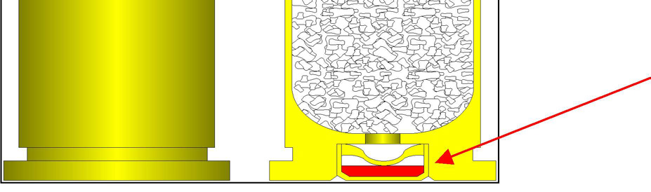
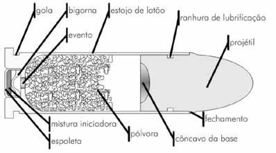
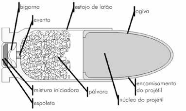
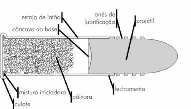
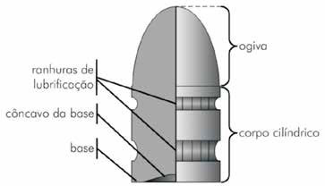
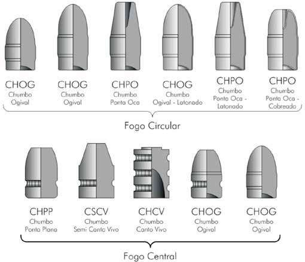
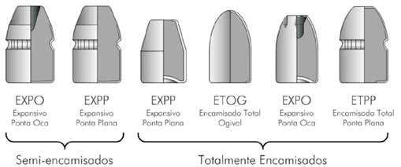

O termo “arma” pode ser amplamente conceituado como “todo objeto que pode aumentar a capacidade de ataque ou defesa do homem” (Tochetto, 2011, p.1). Alguns objetos, como uma espada ou uma arma de fogo, foram concebidos com a finalidade específica de serem utilizados como arma e, por isso, são deno minadas “armas próprias”, porém outros, embora não tenham sido projetados com esta finalidade, podem eventualmente ser utilizados como arma, como um garfo, uma enxada ou uma chave de fenda, sendo denominados “armas impróprias”. As armas, assim definidas, podem ser divididas do seguinte modo: armas manuais são aquelas apropriadas principalmente para o combate corpo a corpo e que funcionam apenas como um prolongamento do braço (espadas e punhais); armas de arremessosão aquelas mais adequadas a produzir seu efeito vul nerante à distância de quem a utiliza, quer seja ela própria funcionando como projétil, quer seja expelindo projéteis. Em função dessa definição, as armas de arremesso podem ser divididas em armas de arremesso simples e complexas: armas de arremesso simplessão aquelas cujo lançamento é efetuado direta mente pela mão do atirador, incluindo dardos, lanças e granadas; armas de arremesso complexas são aquelas constituídas de um aparato lançador, ou arma propriamente dita, por meio do qual são lançados projéteis, os quais são substituíveis e representam parte da munição da arma. Incluem-se nesta categoria catapultas, bestas, arcos, revólveres, pistolas e outras armas de fogo.

Figura 2 – Tipos de armas (Figura: Lehi Sudy).
Armas de fogo podem ser definidas como “engenhos mecânicos dotados da propriedade de expelir projéteis, nos quais é utilizada, para a projeção destes, a força expansiva de gases, resultantes da combustão da pólvora” (Rabello, 1995, p.30). Desta forma, as armas de fogo incluem-se, por definição, na categoria de armas de arremesso complexas. Os elementos essenciais de uma arma de fogo são: a) aparato arremessador – ou arma propriamente dita, o qual é destinado a: i. receber o projétil com sua respectiva carga de projeção, permi tindo o uso imediato pelo atirador, a qualquer instante, mediante inflamação dessa carga; ii. somente permitir a expansão dos gases em direção e sentido determinados; iii. guiar o projétil e servir-lhe de conduto até que a expansão dos gases lhe imprima velocidade. b) carga de projeção – constituída por substância inflamável e cuja função é a produção de um grande volume de gases a fim de imprimir velocidade ao projétil; c) projétil – por meio do qual a arma produz seus efeitos primários, e cujas características vulnerantes dependem de sua geometria, massa e velocidade. Assim sendo, uma arma de fogo somente pode ser considerada como tal se os três elementos estiverem coexistindo ao mesmo tempo. Quando, por exemplo, existir somente a arma, sem a carga de projeção ou o projétil, estaremos diante de um objeto, talvez contundente, mas não de uma arma de fogo. No Brasil, a Lei 10.826/2003 dispõe sobre o registro, a posse, o porte e a comercialização de armas de fogo e munição, além de definir os crimes relacio nados. Contudo, o texto legal não conceitua o que é uma arma de fogo, deixando essa delimitação — bem como a diferenciação para armas de pressão, réplicas e simulacros — a cargo de seus regulamentos.
As primeiras formas de munição consistiam em uma pólvora em pó, carregada em um frasco ou chifre, que juntamente com projéteis de formatos irregulares eram introduzidos a partir da boca do cano. Por volta do século XV a “pólvora negra” (uma mistura de salitre — nitrato de sódio —, carvão e enxofre) se tornou o padrão para uso em arma de fogo, com seu carregamento, bem como do projétil, ainda a partir da boca do cano. Mas esta pólvora, além de ineficiente, produzia diversos inconvenientes para o disparo, como muita fumaça, tendo sido, com o tempo, substituída pela pólvora sem fumaça[4]. Na evolução das munições momento especial ocorreu com a invenção dos cartuchos de munição, quando os elementos de munição (estojos, cápsula de espoletamento, projétil e propelente) passaram a ser acoplados, constituindo uma unidade de munição completa. Isto permitiu o estabelecimento do sistema de fogo central bem como o uso de canos com raiamento (ver Figura 3). Atualmente cada arma moderna é concebida para um tipo específico de munição já existente ou para testar as possibilidades de um novo cartucho, inventado para atender a demandas técnicas ou táticas.

Projétil Estojo Propelente

Cápsula de espoletamento
Figura 3 – Ilustração de um cartucho de munição com sistema de fogo central,
ressaltando os elementos de munição que o constituem (Fonte: Adaptado de fonte não identificada). A seguir são ilustradas as estruturas básicas de três cartuchos de munição de armas de fogo modernas: um de fogo central para revólver, um de fogo central para pistola e um de fogo radial, indicando suas principais partes.

Figura 4 – Esquema de um cartucho de fogo central para revólver (Ilus
tração: Marcelo Jost).

Figura 5 – Esquema de um cartucho de fogo central para pistola (Ilus
tração: Marcelo Jost).

Figura 6 – Esquema de um cartucho de fogo circular (Ilustração:
Marcelo Jost).
O estojo é geralmente confeccionado em metal e com formatos variados, dependendo das características da câmara de combustão à qual se destina. Constitui o elemento inerte do cartucho, na medida em que nem participa do processo de combustão, nem é expelido pelo cano da arma. A parte anterior do estojo é denominada boca, na qual fica engastado o projétil, e sua extremidade posterior, bastante espessa, é denominada culote. No culote fica, no caso dos cartuchos de fogo central, o alojamento da cápsula de espoletamento e o local onde são impressos os caracteres que identificam o calibre e a marca do fabricante (denominado estampa da base). O formato dos estojos varia em função das características da arma que irá utilizá-lo. Assim, ele pode ser cilíndrico, levemente cônico ou ainda com um estrangulamento em sua parte frontal. Os estojos estrangulados são denominados garrafas e utilizados em armamentos de alta potência e de pequeno calibre (por exemplo, rifles calibre 5,56 OTAN e 7,62 OTAN). O culote pode apresentar uma borda saliente denominada aro, como nas munições para revólver (estojos rim); uma borda semisaliente (estojos semi-rim) ou nenhuma borda, como no caso das munições para pistola (estojos rimless). Os termos rim, semi-rim e rimless derivam do inglês.
A cápsula de espoletamento, ou simplesmente espoleta, é um pequeno reci piente metálico, utilizado nas munições de fogo central (às vezes parte integrante do estojo e às vezes neste montado, em que é colocada a escorva ou mistura iniciadora, cuja deflagração por ação mecânica inflama a carga de projeção. Os cartuchos de fogo circular não possuem cápsula de espoletamento como elemento diferenciado, uma vez que a escorva se encontra alojada na borda oca e ressaltada do próprio estojo, e em contato direto com a carga de projeção. Nos cartuchos de fogo central, os quais são mais largamente empregados, a cápsula de espoletamento é geralmente engastada, como um elemento separado, na base do estojo, comunicando-se com o interior desse por meio de orifícios denominados eventos. Existem basicamente três tipos de espoletas, dependendo de sua estrutura interna: espoletas tipo Boxer, espoletas tipo Berdan e espoletas tipo bateria. Todos os tipos de espoletas necessitam de uma bigorna, ou seja, uma estrutura rígida cuja finalidade é fornecer uma superfície de impacto quando a espoleta é comprimida pelo pino percussor. A mistura iniciadora ou escorva contida na espoleta é uma mistura que con tém um composto organometálico denominado estifinato de chumbo, e outros compostos (nitrato de bário, trissulfeto de antimônio e alumínio em pó, etc.). A composição exata da mistura varia de uma fábrica para outra. Não obstante essa variação, a principal característica das misturas iniciadoras é sua sensibilidade a choques mecânicos e à variação de pressão. No momento que o percussor comprime a mistura contra a bigorna, ocorre a detonação da mistura iniciadora, a qual deflagra a carga de projeção.
A carga de projeção, ou propelente, é o elemento ativo do cartucho de munição e que confere à arma de fogo suas características. Consta de um combustível sólido granular capaz de se inflamar com grande velocidade, produzindo uma grande quantidade de gases, sem necessitar de oxigênio para isso. A expansão dos gases é a principal responsável pela projeção do projétil pelo interior do cano, conferindo-lhe a energia cinética necessária para causar danos ao alvo pretendido. As cargas de projeção antigas eram constituídas de pólvora negra, a qual é composta por uma mistura de salitre (nitrato de sódio), carvão e enxofre. Entretanto, devido à ineficiência de combustão e à grande quantidade de fumaça e resíduos produzidos, deixou de ser utilizada em armas modernas depois do advento das pólvoras sem fumaça. As cargas de projeção modernas são denominadas pólvoras químicas, ou pólvoras sem fumaça. Quando constituídas somente de nitrocelulose, recebem a denominação de pólvora de base simples, e quando constituídas de nitrocelulose e nitroglicerina, recebem a denominação de pólvora de base dupla. Essas pólvoras químicas se apresentam sob a forma granular, e a geometria destes grãos, em conjunto com a composição química, determina a velocidade de queima da pólvora. Pólvoras utilizadas em armas curtas, denominadas pólvoras vivas, queimam de forma mais intensa e rápida do que as pólvoras utilizadas em armas longas, denominadas pólvoras progressivas. Essa diferença se baseia no fato de que, sendo o cano das armas curtas de pequenas dimensões, a pólvora possui um tempo menor para conferir máxima velocidade ao projétil, devendo, portanto, queimar mais rapidamente. Por outro lado, a pólvora pode queimar mais lentamente nas armas longas, visto que o cano é maior e há mais tempo para impulsionar o projétil.
O projétil é a parte vulnerante do cartucho de munição, ou seja, é o que será expelido pelo cano da arma em direção ao alvo. Os efeitos particulares de um projétil sobre seu alvo e o comportamento desse em sua trajetória dependem fundamentalmente de sua massa e de sua forma. Os cartuchos de fogo central e de fogo circular são carregados, geralmente, com apenas um projétil alojado, total ou parcialmente, dentro do estojo. Os projéteis podem ser compostos apenas por liga de chumbo ou podem ser semien camisados e encamisados, cada tipo com características próprias. Os projéteis de liga de chumbo, compostos por misturas de chumbo com estanho, antimônio e arsênio, possuem uma forma geral cilíndrica, apresentando uma base, a qual pode ser côncava ou plana; um corpo cilíndrico, de modo geral com ranhuras ou anéis de lubrificação; e uma parte frontal ogival, conforme a figura abaixo.

Figura 7 – Anatomia básica de um projétil de chumbo ogival (Ilustração: Marcelo
Jost). Quanto à forma da ogiva ou ponta, os projéteis de liga de chumbo podem ser classificados em ogival (OG), ogival de ponta plana (OGPP), ponta oca (PO), cone truncado (CT), canto vivo (CV) e semicanto vivo (SCV). A figura abaixo mostra a anatomia básica de projéteis de chumbo nu, tanto para fogo circular como para fogo central, com a respectiva nomenclatura adotada pela CBC (Companhia Brasileira de Cartuchos, Brasil).

Figura 8 – Anatomia e nomenclatura de projéteis de chumbo nu (Ilustração: Marcelo Jost).
Os projéteis semiencamisados e encamisados, também denominados de projéteis semijaquetados e jaquetados, são constituídos por um encamisamento parcial — no caso dos projéteis semiencamisados, geralmente composto de latão ou de outras ligas com alto ponto de fusão — e um núcleo, geralmente composto por ligas de chumbo. A função do encamisamento é impedir o derretimento do projétil no interior do cano de armas com maior poder de fogo, o que ocorreria se o projétil fosse confeccionado somente com liga de chumbo. Além disso, o encamisamento previne o “chumbamento do cano”, ou seja, o acúmulo de chumbo metálico nos cavados do cano que prejudicariam as características balísticas do armamento. Os projéteis semiencamisados são, geralmente, utilizados em revólveres, e os totalmente encamisados, em pistolas. Quanto à forma da ogiva ou ponta, os projéteis semiencamisados e encamisa dos apresentam uma imensa variedade, podendo ser genericamente classificados em ogival (OG), ogival de ponta plana (OGPP), ponta oca (PO), pontiagudo e semicanto vivo (SCV). A figura abaixo mostra a anatomia básica de projéteis semiencamisados e encamisados, com a respectiva nomenclatura adotada pela CBC (Companhia Brasileira de Cartuchos, Brasil).

Figura 9 – Anatomia e nomenclatura de projéteis semiencamisados e encamisados (Ilustra
ção: Marcelo Jost). Além disso, existem projéteis com ponta oca, expansivos com desenhos especiais, tais como hydra-shok®, black-talon®, silvertip®, quick-shok® e expo-gold®, geral- mente utilizados em pistolas, cujo objetivo é transferir o máximo de energia para o alvo humano, incapacitando rapidamente um oponente em combate urbano.